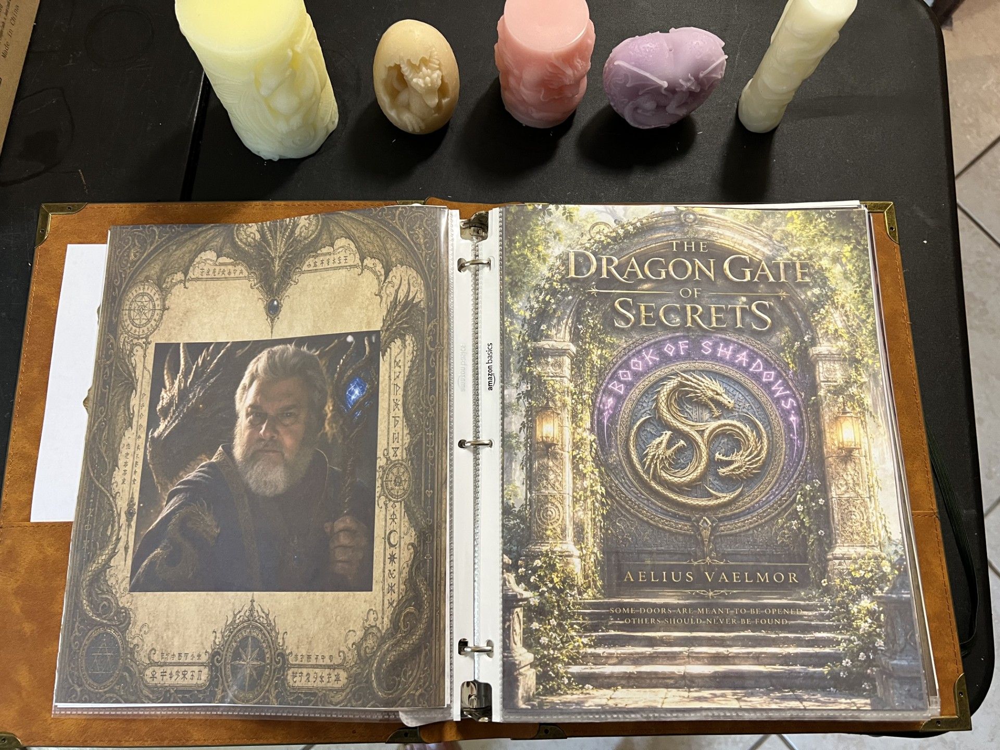
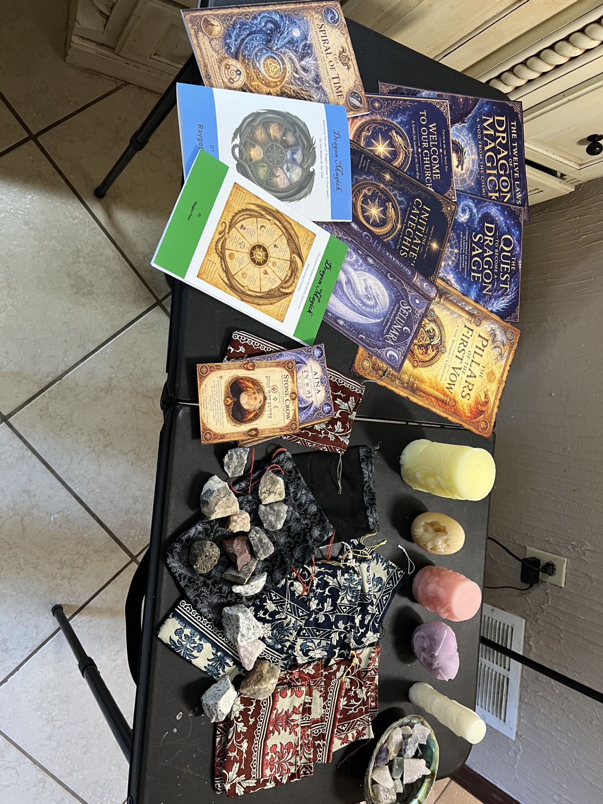

The Written Works
Published books may be acquired through Amazon. Church booklets, guides, catechisms, and other completed writings may be provided directly by the Church.
Works, tools, and treasures created to accompany the journey.
The Commissary is where the tangible works of the Church may be found—things written, crafted, gathered, or made by hand. Each has a purpose, whether it is meant for study, practice, personal use, or the simple joy of carrying a little piece of the First Day with you.
Published books may be acquired through Amazon. Church booklets, guides, catechisms, and other completed writings may be provided directly by the Church.
The Draconic Rune cards and other completed Dragon Magick works bring the language and imagery of the Dragons into a form that can be held, studied, and worked with.
Hand-sewn grigri bags, crystals and stones, and hand-poured dragon candles in different shapes, sizes, colors, and custom fragrances.
Some works are made individually: custom-built staffs, custom-fragranced candles, and other handcrafted pieces created for a particular seeker.

These are not mass-produced objects chosen from a catalog. The collection grows from the work already being done—books written, cards created, bags sewn, stones gathered, candles poured, and custom pieces built by hand.
As the Commissary grows, we will keep the collection curated. The purpose is not to fill shelves. It is to offer meaningful works that belong here.
The Library holds the knowledge. The Commissary provides a path to acquire the physical works.
The Church's published books can be acquired through Amazon. The Church Library remains the place to learn about the works; the Commissary provides the acquisition path.
FIND THE BOOKS ON AMAZON →
“Some are written. Some are crafted. Some are made by hand. All are offered with purpose.”